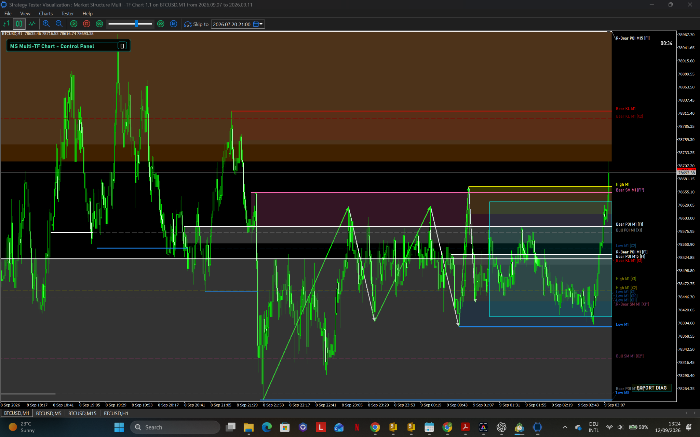
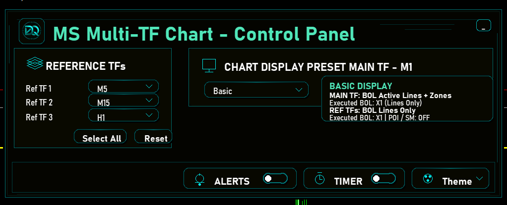
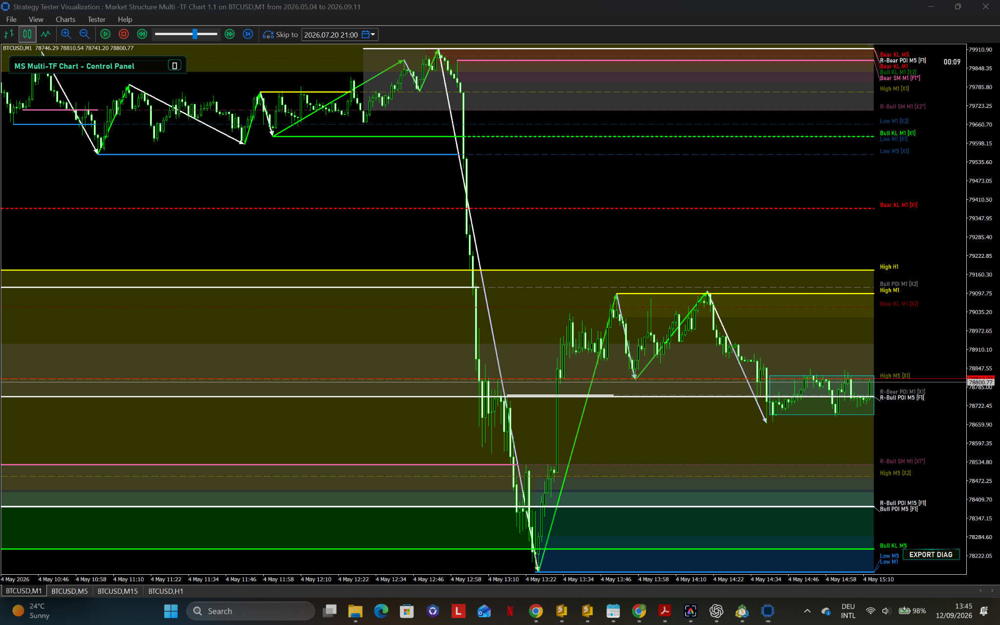

01
Multi-Timeframe View
Bring reference timeframe structure into the active chart and reduce unnecessary chart switching.

Market Structure Multi-Timeframe Chart brings selected timeframe structure into a single, controlled visual workspace.

Use the main timeframe together with selected reference timeframes, control what is displayed, and focus on the structure that matters to your analysis.

Reference timeframes, zones and structural levels remain visible inside one coordinated MetaTrader 5 chart workflow.
DemQora focuses on visual systems that make multi-timeframe market information easier to inspect, compare and understand.
Bring reference timeframe structure into the active chart and reduce unnecessary chart switching.
Use display presets and individual controls to choose the level of information shown on screen.
Trend, range, BOL, POI and SM visual elements are presented inside one coordinated chart environment.